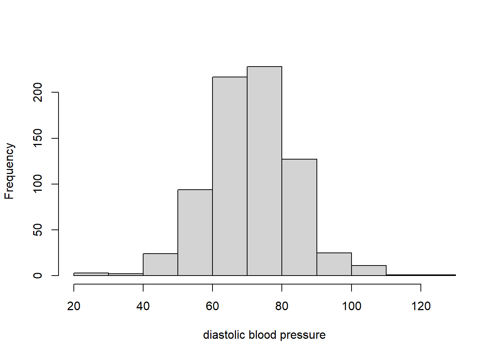
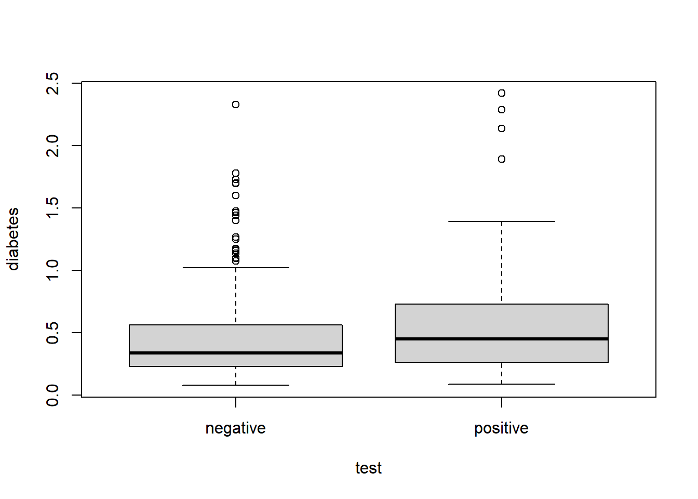
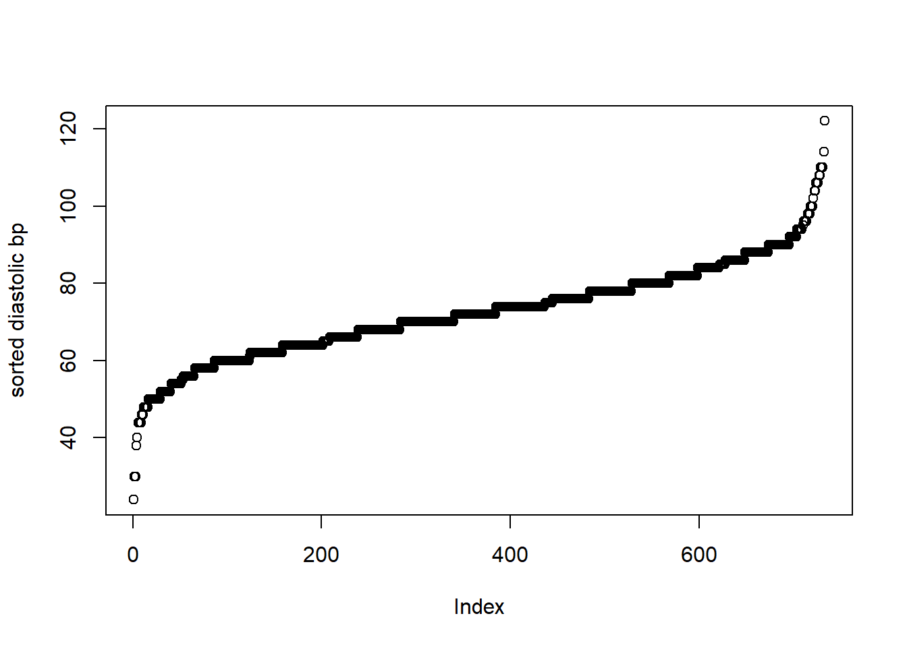
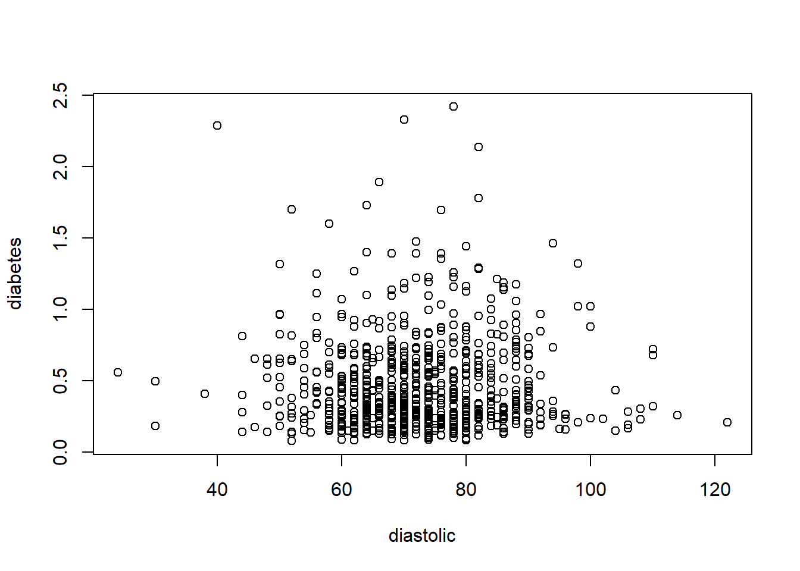
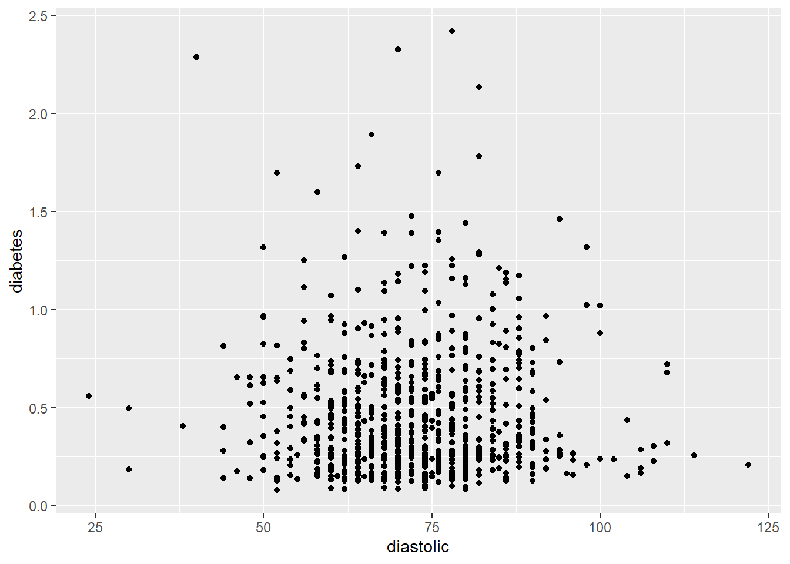
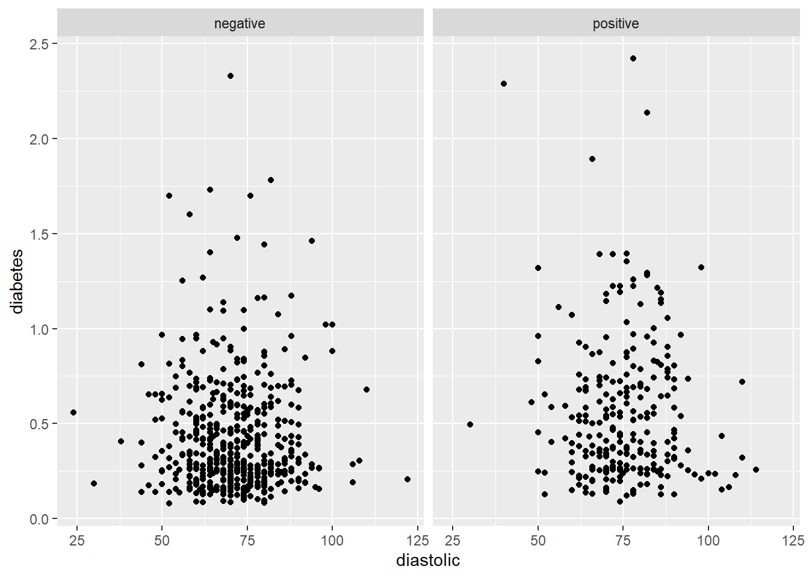
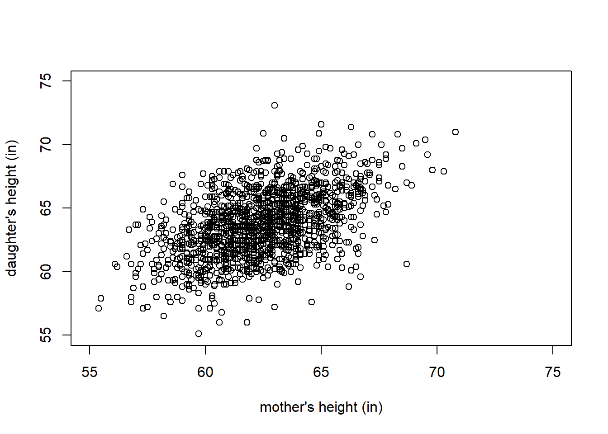
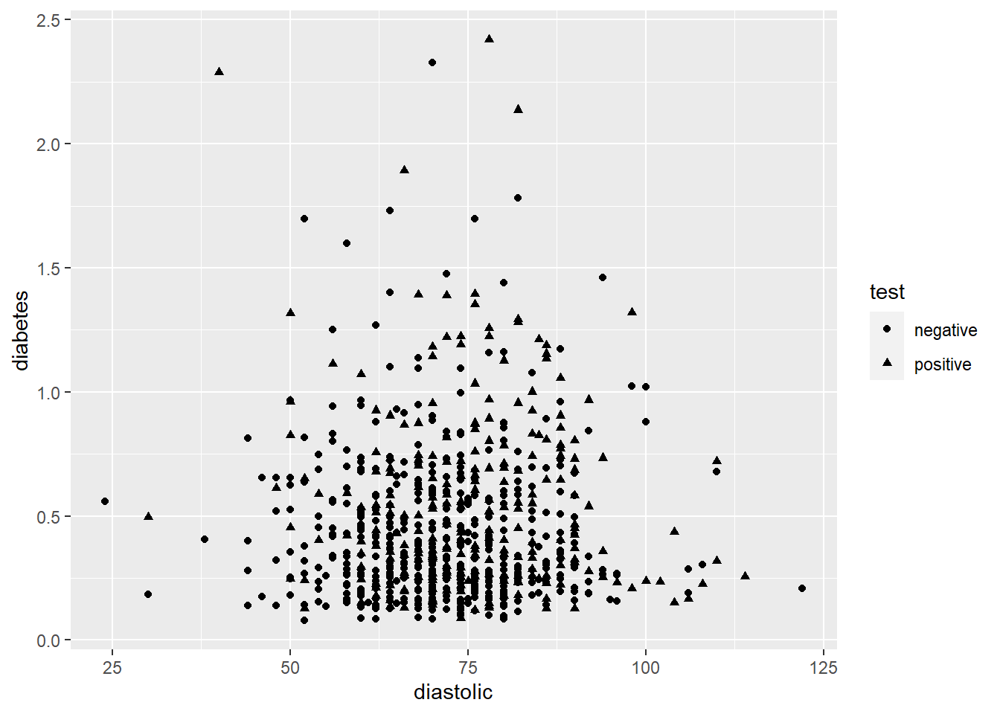
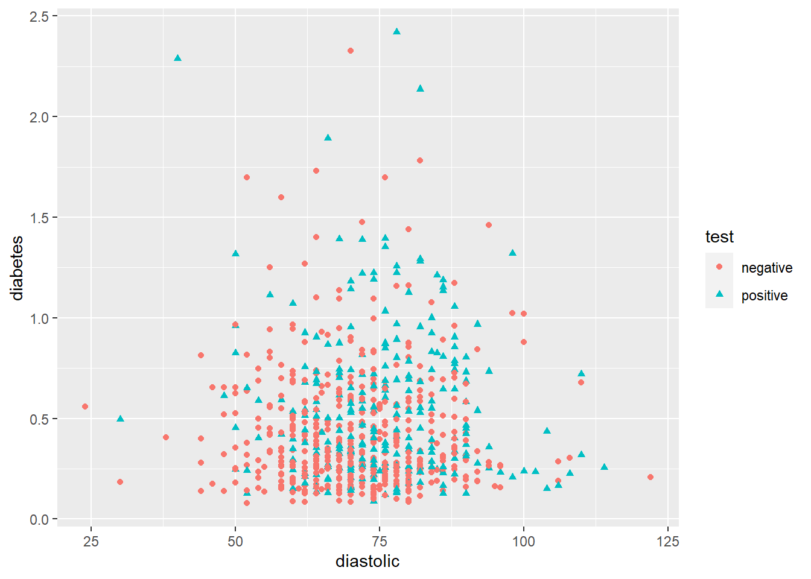

Chapter 2 Data exploration
Based on Chapter 1 of LMWR2, Chapter 1 of ALR4
2.1 Data analysis process
- Define a statistical question of interest.
- Collect relevant data.
- Analyze the data.
- Interpret your analysis.
- Make a decision.
“The formulation of a problem is often more essential than its solution, which may be merely a matter of mathematical or experimental skill” - Albert Einstein
2.1.1 Problem Formulation
- Understand the physical background.
- Statisticians often work in collaboration with others and need to understand something about the subject area.
- Understand the objective.
- What are your goals?
- Make sure you know what the client wants.
- Put the problem into statistical terms.
- This is often the most challenging step and where irreparable errors are sometimes made.
- That a statistical method can read in and process the data is not enough. The results of an inept analysis may be meaningless.
2.1.2 Data collection
Data collection:
- How the data were collected has a crucial impact on what conclusions can be made.
- Are the data observational or experimental?
- Are the data a sample of convenience or were they obtained via a designed sample survey?
- Is there nonresponse bias?
- The data you do not see may be just as important as the data you do see.
- Are there missing values?
- This is a common problem that is troublesome and time consuming to handle.
- How are the data coded? How are the qualitative variables represented?
- What are the units of measurement?
- Beware of data entry errors and other corruption of the data.
- Perform some data sanity checks.
2.2 Data exploration
An initial exploration of the data should be performed prior to any formal analysis or modeling.
Initial data analysis should consist of numerical summaries and appropriate plots.
2.2.1 Numerical summaries of data
Statistics can be used to numerically summarize aspects of the data:
- mean
- standard deviation (SD)
- maximum and minimum
- correlation
- other measures, as appropriate
2.2.2 Visual summaries of data
Plots can provide a useful visual summary of the data.
- For one numerical variable: boxplots, histograms, density plots, etc.
- For one categorial variable: bar charts.
- For two numerical variables: scatter plots.
- For one numerical and one categorical variables: parallel boxplots or density plots that distinguish between category level.
- For two categorical variables: panels of bar charts.
- For three or more variables: one or two variable plots with distinguishing colors or line types, interactive and dynamic graphics.
Good graphics are essential in data analysis.
- They help us to understand our data structure so that we can avoid mistakes.
- They help us decide on a model.
- They help communicate the results of our analysis.
- Graphics can be more convincing than text at times.
2.2.3 What to look for
When summarizing the data, look for:
- outliers
- data-entry errors
- skewness
- unusual distributions
- patterns or structure
2.3 Kidney Example
The National Institute of Diabetes and Digestive and Kidney Diseases conducted a study on 768 adult female Pima Native Americans living near Phoenix. The following variables were recorded:
pregnant- number of times pregnantglucose- plasma glucose concentration at 2 hours in an oral glucose tolerance testdiastolic- diastolic blood pressure (mm Hg)triceps- triceps skin fold thickness (mm)insulin- 2-hour serum insulin (mu U/ml)bmi- body mass index (weight in kg/(height in m2))diabetes- diabetes pedigree functionage- age (years)test- test whether the patient showed signs of diabetes (coded zero if negative, one if positive).
The data may be obtained from the UCI Repository of machine learning databases at https://archive.ics.uci.edu/ml.
Let’s load and examine the structure of the data
data(pima, package = "faraway")
str(pima) # structure
#> 'data.frame': 768 obs. of 9 variables:
#> $ pregnant : int 6 1 8 1 0 5 3 10 2 8 ...
#> $ glucose : int 148 85 183 89 137 116 78 115 197 125 ...
#> $ diastolic: int 72 66 64 66 40 74 50 0 70 96 ...
#> $ triceps : int 35 29 0 23 35 0 32 0 45 0 ...
#> $ insulin : int 0 0 0 94 168 0 88 0 543 0 ...
#> $ bmi : num 33.6 26.6 23.3 28.1 43.1 25.6 31 35.3 30.5 0 ...
#> $ diabetes : num 0.627 0.351 0.672 0.167 2.288 ...
#> $ age : int 50 31 32 21 33 30 26 29 53 54 ...
#> $ test : int 1 0 1 0 1 0 1 0 1 1 ...
head(pima) # first six rows
#> pregnant glucose diastolic triceps insulin bmi diabetes age test
#> 1 6 148 72 35 0 33.6 0.627 50 1
#> 2 1 85 66 29 0 26.6 0.351 31 0
#> 3 8 183 64 0 0 23.3 0.672 32 1
#> 4 1 89 66 23 94 28.1 0.167 21 0
#> 5 0 137 40 35 168 43.1 2.288 33 1
#> 6 5 116 74 0 0 25.6 0.201 30 0
tail(pima) # last six rows
#> pregnant glucose diastolic triceps insulin bmi diabetes age test
#> 763 9 89 62 0 0 22.5 0.142 33 0
#> 764 10 101 76 48 180 32.9 0.171 63 0
#> 765 2 122 70 27 0 36.8 0.340 27 0
#> 766 5 121 72 23 112 26.2 0.245 30 0
#> 767 1 126 60 0 0 30.1 0.349 47 1
#> 768 1 93 70 31 0 30.4 0.315 23 02.3.1 Numerically summarizing the data
The summary command is a useful way to numerically summarize a data frame.
The summary function will compute the minimum, 0.25 quantile, mean, median, 0.75 quantile, and maximum of a numeric variable.
The summary function will count the number of values having each level for a factor variable.
Let’s summarize the pima data frame.
summary(pima)
#> pregnant glucose diastolic triceps
#> Min. : 0.000 Min. : 0.0 Min. : 0.00 Min. : 0.00
#> 1st Qu.: 1.000 1st Qu.: 99.0 1st Qu.: 62.00 1st Qu.: 0.00
#> Median : 3.000 Median :117.0 Median : 72.00 Median :23.00
#> Mean : 3.845 Mean :120.9 Mean : 69.11 Mean :20.54
#> 3rd Qu.: 6.000 3rd Qu.:140.2 3rd Qu.: 80.00 3rd Qu.:32.00
#> Max. :17.000 Max. :199.0 Max. :122.00 Max. :99.00
#> insulin bmi diabetes age
#> Min. : 0.0 Min. : 0.00 Min. :0.0780 Min. :21.00
#> 1st Qu.: 0.0 1st Qu.:27.30 1st Qu.:0.2437 1st Qu.:24.00
#> Median : 30.5 Median :32.00 Median :0.3725 Median :29.00
#> Mean : 79.8 Mean :31.99 Mean :0.4719 Mean :33.24
#> 3rd Qu.:127.2 3rd Qu.:36.60 3rd Qu.:0.6262 3rd Qu.:41.00
#> Max. :846.0 Max. :67.10 Max. :2.4200 Max. :81.00
#> test
#> Min. :0.000
#> 1st Qu.:0.000
#> Median :0.000
#> Mean :0.349
#> 3rd Qu.:1.000
#> Max. :1.0002.3.2 Cleaning the data
Cleaning data involves finding and correcting data quality issues.
The pima data set has some odd characterics:
- The minimum
diastolicblood pressure is zero.- That’s generally an indication of a health problem.
- The
testvariable appears to benumericbut should be afactor(categorical) variable. - Many other variables have unusual zeros.
- Look for anything unusual or unexpected, perhaps indicating a data-entry error.
Let’s look at the first 40 sorted diastolic values.
sort(pima$diastolic)[1:40]
#> [1] 0 0 0 0 0 0 0 0 0 0 0 0 0 0 0 0 0 0 0 0 0 0 0 0 0
#> [26] 0 0 0 0 0 0 0 0 0 0 24 30 30 38 40The first 35 values of diastolic are zero. That’s a problem.
- It seems that 0 was used in place of a missing value.
- This is very bad since 0 is a real number and this problem may be overlooked, which can lead to faulty analysis!
- This is why we must check our data carefully for things that don’t make sense.
The value for missing data in R is NA.
Several variables share this problem. Let’s set the 0s that should be missing values to NA.
pima$diastolic[pima$diastolic == 0] <- NA
pima$glucose[pima$glucose == 0] <- NA
pima$triceps[pima$triceps == 0] <- NA
pima$insulin[pima$insulin == 0] <- NA
pima$bmi[pima$bmi == 0] <- NAThe test variable is a categorical variable, not numerical.
- R thinks the
testvariable isnumeric. - In R, a categorical variable is a
factor. - We need to convert the
testvariable to afactor.
Let’s convert test to a factor.
pima$test <- factor(pima$test)
summary(pima$test)
#> 0 1
#> 500 268500 of the cases were negative and 268 were positive. We can provide more descriptive labels using the levels function.
We change the 0 and 1 levels to negative and positive to make the data more descriptive. A summary of the updates test variable shows why this is useful.
levels(pima$test) <- c("negative", "positive")
summary(pima$test)
#> negative positive
#> 500 2682.4 Visualizing data with base graphics
2.4.1 Histograms
The hist function can be used create a histogram of a numerical vector.
- The labels of the plot can be customized using the
xlabandylabarguments. - The main title of the plot can be customized using the
mainargument.
Here is a slightly customized histogram of diastolic blood pressure.
hist(pima$diastolic, xlab = "diastolic blood pressure", main = "")
The histogram is approximately bell-shaped and centered around 70.
We can change the number of breaks in the histogram by specifying the breaks argument of the hist function.
Consider how the plot changes below.
hist(pima$diastolic, xlab = "diastolic blood pressure", main = "", breaks = 20)
2.4.2 Density plots
Many people prefer the density plot over the histogram because the histogram is more sensitive to its options.
A density plot is essentially a smoothed version of a histogram.
- It isn’t as blocky.
- It sometimes has weird things happen at the boundaries.
The plot and density function can be combined to construct a density plot.
plot(density(pima$diastolic, na.rm = TRUE), main = "")
In the example above, we have to specify na.rm = TRUE so that the density is only computed using the non-missing values.
2.4.3 Index plots
An index plot is a scatter plot of a numeric variable versus the index of each value (i.e., the position of the value in the vector).
- This is most useful for sorted vectors.
A scatter plot of sorted numeric values versus their index can be used to identify outliers and see whether the data has many repeated values.
plot(sort(pima$diastolic), ylab = "sorted diastolic bp")
The flat spots in the plot above show that the diastolic variable has many repeated values.
2.4.4 Bivariate scatter plots
Bivariate scatter plots can be used to identify the relationship between two numeric variables.
A scatter plot of diabetes vs diastolic blood pressure is shown below.
plot(diabetes ~ diastolic, data = pima)
There is no clear pattern in the points, so it’s difficult to claim a relationship between the two variables.
2.4.5 Bivariate boxplots
A parallel boxplot of diabetes score versus test result is shown below.
plot(diabetes ~ test, data = pima)
The median diabetes score seems to be a bit higher for positive tests in comparison to the negative tests.
2.4.6 Multiple plots in one figure
The par function can be used to construct multiple plots in one figure.
- The
mfrowargument can be used to specify the number of rows and columns of plots you need.
A 1 by 2 set of plots is shown below.
par(mfrow = c(1, 2))
plot(diabetes ~ diastolic, data = pima)
plot(diabetes ~ test, data = pima)
par(mfrow = c(1, 1)) # reset to a single plot2.5 Visualizing data with ggplot2
The previous plots were created using R’s base graphics system.
- base graphics are fast and simple to produce while looking professional.
A fancier alternative is to construct plots using the ggplot2 package.
In its simplest form, to construct a (useful) plot in ggplot2, you need to provide:
- A
ggplotobject.- This is usually the object that holds your data frame.
- The data frame is passed to
ggplotvia thedataargument.
- A geometry object
- Roughly speaking, this is the kind of plot you want.
- e.g.,
geom_histfor a histogram,geom_pointfor a scatter plot,geom_densityfor a density plot.
- An aesthetic mapping
- Aesthetic mappings describe how variables in the data are mapped to visual properties of a geometry.
- This is where you specify which variable with be the
xvariable, theyvariable, which variable will control color in the plots, etc.
2.5.1 A ggplot2 histogram
library(ggplot2)
ggpima <- ggplot(pima)
ggpima + geom_histogram(aes(x=diastolic))
#> `stat_bin()` using `bins = 30`. Pick better value with `binwidth`.
#> Warning: Removed 35 rows containing non-finite values (stat_bin).
2.5.2 A ggplot2 density plot
ggpima + geom_density(aes(x = diastolic))
#> Warning: Removed 35 rows containing non-finite values (stat_density).
2.5.3 A ggplot2 scatter plot
ggpima + geom_point(aes(x = diastolic, y = diabetes))
#> Warning: Removed 35 rows containing missing values (geom_point).
2.5.4 Scaling ggplot2 plots
In general, scaling is the process by which ggplot2 maps variables to unique values. When this is done for discrete variables, ggplot2 will often scale the variable to distinct colors, symbols, or sizes, depending on the aesthetic mapped.
In the example below, we map the test variable to the shape aesthetic, which is then scaled to different shapes for the different test levels.
ggpima +
geom_point(aes(x = diastolic, y = diabetes, shape = test))
#> Warning: Removed 35 rows containing missing values (geom_point).
Alternatively, we can map the test variable to the color aesthetic, which creates a plot with different colors for each observation based on the test level.
ggpima +
geom_point(aes(x = diastolic, y = diabetes, color = test))
#> Warning: Removed 35 rows containing missing values (geom_point).
We can even combine these two aesthetic mappings in a single plot to get different colors and symbols for each level of test.
ggpima +
geom_point(aes(x = diastolic, y = diabetes, shape = test, color = test))
#> Warning: Removed 35 rows containing missing values (geom_point).
2.5.5 Facetting in ggplot2
Facetting creates separate panels (facets) of a data frame based on one or more facetting variables.
Below, we facet the data by the test result.
ggpima +
geom_point(aes(x = diastolic, y = diabetes)) +
facet_grid(~ test)
#> Warning: Removed 35 rows containing missing values (geom_point).
2.5.6 Summary of ggplot2
To create a ggplot2 plot:
- Create a
ggplotobject using theggplotfunction.- Specify the data frame the data is contained in (e.g., the data frame is
pima).
- Specify the data frame the data is contained in (e.g., the data frame is
- Specify the geometry for the plot (the kind of plot you want to produce)
- Specify the aesthetics using
aes.- The aesthetic specifies what you see, such as position in the \(x\) or \(y\) direction or aspects such as shape or color.
- The aesthetic can be specified in the geometry, or if you have consistent aesthetics across multiple geometries, in the
ggplotstatement.
The advantage of ggplot2 is more apparent in producing complex plots involving more than two variables.
- ggplot2 makes it easy to plot the data for each group with different colors, symbols, line types, etc.
- ggplot2 will automatically provide a legend mapping the attributes to the different groups.
- ggplot2 makes it easy to create separate panels with plots for the observations having a certain characteristic.
2.6 Summary of data exploration
You should use both numerical and graphical summaries of data prior to modeling data.
Data exploration helps us to:
- Gain understanding about our data
- Identify problems or unusual features of our data
- Identify patterns in our data
- Decide on a modeling approach for the data
- etc.